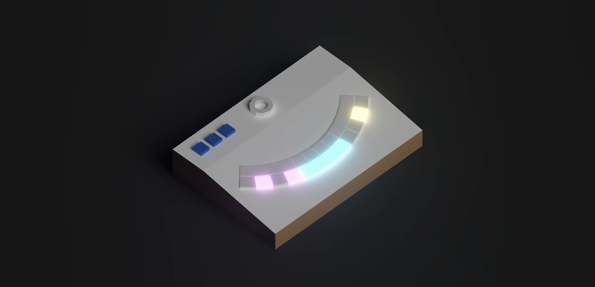
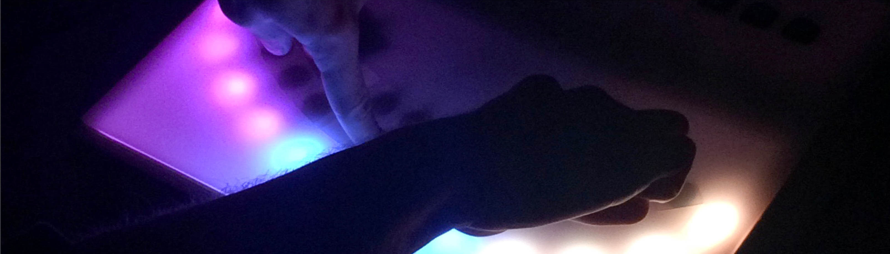
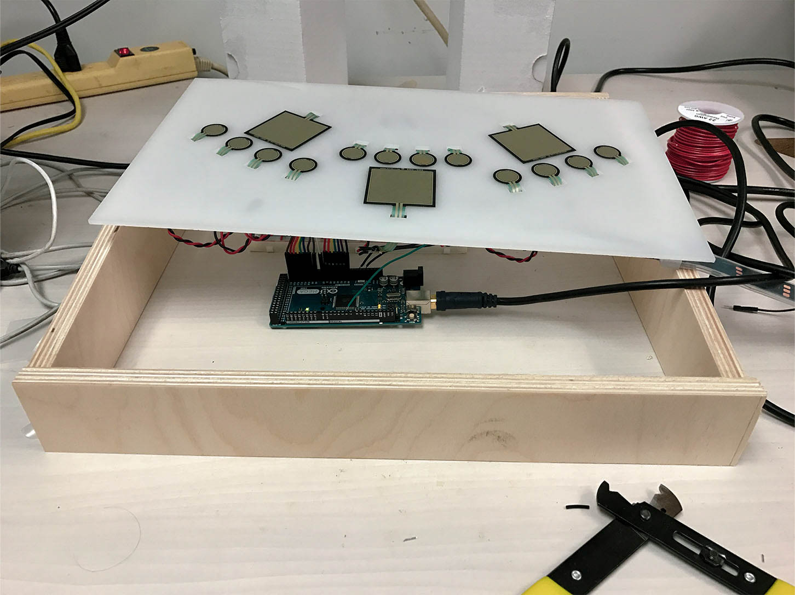
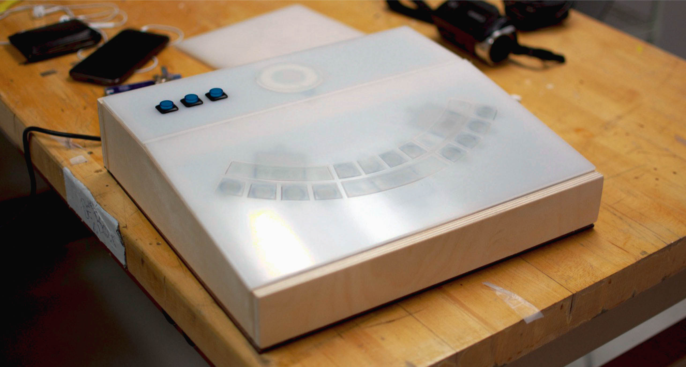

A digital musical instrument that can play John Coltrane's circle of fifths tone circle and allow musicians to physically explore an otherwise purely theoretical concept. Each of the curved silicone buttons corresponds to a different note in the tone circle.

Coltrane's circle is a way to show how notes and scales relate to each other

15 pressure sensors measure how hard the player presses down
Max/MSP reads the raw sensor data and converts it to a MIDI signal
A Reason patch turns that signal into actual sound output

Build chords for the large keys using three blue buttons at the top